VIDA
A percepção do vácuo não é a ausência de substância, mas a manifestação da inércia espiritual. Frequentemente, o “vazio” parece possuir uma massa maior que a presença do Espírito. Isso não é um abandono…
Leia maisTodo mundo conhece a “Lei do Fone de Ouvido”. Você enrola com todo o carinho, guarda no bolso e, dois minutos depois, tira um nó de marinheiro. Não foi um duende que fez aquilo. Foi a natureza. A mesma coisa…
Leia maisA adoração sem a alma é uma anomalia de presença. É o equivalente biológico de gerar filhos e atravessar o tempo sem nunca observá-los crescer, com a cognição sequestrada por estímulos paralelos, enquanto o…
Leia maisNós fomos criados acreditando que o inimigo tem rosto. Que o mal empunha uma espada, uma arma, ou grita uma ofensa. Mas Tchernóbil nos ensinou a lição teológica mais aterrorizante do século XX: o mal mais…
Leia maisSócrates (470 a.C. – 399 a.C.) não foi apenas um homem de seu tempo, mas o “divisor de águas” da alma ocidental. Sua vida em Atenas representa a transição da curiosidade sobre o mundo exterior para a…
Leia maisA Síndrome do Motor no Vácuo O esgotamento do homem moderno não é a falência por excesso de trabalho, mas a combustão por excesso de futilidade. Nós não queimamos o nosso motor tracionando peso real; nós…
Leia mais5 textos
A percepção do vácuo não é a ausência de substância, mas a manifestação da inércia espiritual. Frequentemente, o “vazio” parece possuir uma massa maior que a presença do Espírito. Isso não é um abandono…
A Síndrome do Motor no Vácuo O esgotamento do homem moderno não é a falência por excesso de trabalho, mas a combustão por excesso de futilidade. Nós não queimamos o nosso motor tracionando peso real; nós…
Nós fomos criados acreditando que o inimigo tem rosto. Que o mal empunha uma espada, uma arma, ou grita uma ofensa. Mas Tchernóbil nos ensinou a lição teológica mais aterrorizante do século XX: o mal mais…
Todo mundo conhece a “Lei do Fone de Ouvido”. Você enrola com todo o carinho, guarda no bolso e, dois minutos depois, tira um nó de marinheiro. Não foi um duende que fez aquilo. Foi a natureza. A mesma coisa…
Sabe quando você bate o dedinho do pé na quina da mesa e, além de gritar, xinga a mesa de “estúpida”? Ou quando jura que seu cachorro está fazendo “cara de culpa” porque comeu seu chinelo? Isso é…
3 textos
A percepção do vácuo não é a ausência de substância, mas a manifestação da inércia espiritual. Frequentemente, o “vazio” parece possuir uma massa maior que a presença do Espírito. Isso não é um abandono…
A adoração sem a alma é uma anomalia de presença. É o equivalente biológico de gerar filhos e atravessar o tempo sem nunca observá-los crescer, com a cognição sequestrada por estímulos paralelos, enquanto o…
Ontem, ouvi uma verdade que ecoou como um trovão: ”O silêncio é o barulho mais insuportável deste século”. Charles Chaplin, mestre da comunicação muda, já alertava que ”o barulho aniquila a beleza do…
3 textos
Nós fomos criados acreditando que o inimigo tem rosto. Que o mal empunha uma espada, uma arma, ou grita uma ofensa. Mas Tchernóbil nos ensinou a lição teológica mais aterrorizante do século XX: o mal mais…
Antoine de Saint-Exupéry, nós aceitamos as suas desculpas. Você pediu perdão logo na dedicatória por oferecer esta obra a uma “pessoa grande”, justificando que se tratava de um livro destinado à criança que…
Quando abrimos as primeiras páginas de Diário de um Louco , de Nikolai Gogol, o sentimento imediato é de uma estranha resistência. Para o leitor moderno, acostumado a estímulos constantes, o cotidiano de…
3 textos
Antoine de Saint-Exupéry, nós aceitamos as suas desculpas. Você pediu perdão logo na dedicatória por oferecer esta obra a uma “pessoa grande”, justificando que se tratava de um livro destinado à criança que…
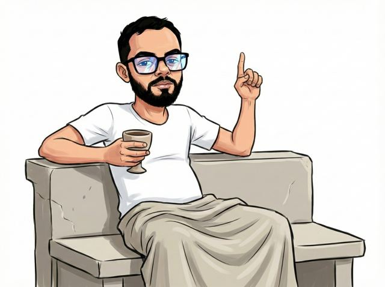
Sócrates (470 a.C. – 399 a.C.) não foi apenas um homem de seu tempo, mas o “divisor de águas” da alma ocidental. Sua vida em Atenas representa a transição da curiosidade sobre o mundo exterior para a…
Sabe quando você bate o dedinho do pé na quina da mesa e, além de gritar, xinga a mesa de “estúpida”? Ou quando jura que seu cachorro está fazendo “cara de culpa” porque comeu seu chinelo? Isso é…
3 textos
A Síndrome do Motor no Vácuo O esgotamento do homem moderno não é a falência por excesso de trabalho, mas a combustão por excesso de futilidade. Nós não queimamos o nosso motor tracionando peso real; nós…
Todo mundo conhece a “Lei do Fone de Ouvido”. Você enrola com todo o carinho, guarda no bolso e, dois minutos depois, tira um nó de marinheiro. Não foi um duende que fez aquilo. Foi a natureza. A mesma coisa…
Ontem, ouvi uma verdade que ecoou como um trovão: ”O silêncio é o barulho mais insuportável deste século”. Charles Chaplin, mestre da comunicação muda, já alertava que ”o barulho aniquila a beleza do…
A percepção do vácuo não é a ausência de substância, mas a manifestação da inércia espiritual. Frequentemente, o “vazio” parece possuir uma massa maior que a presença do Espírito. Isso não é um abandono divino, mas a operação estrita da _kenosis_: o esvaziamento necessário para que a entropia do “eu” não colapse sobre a estrutura da vontade. Deus não desorienta; o GPS interno é que sofre interferência magnética do ego. Quando nos perdemos dentro de nós mesmos, não estamos em um labirinto, mas em um sistema fechado onde a falta de atrito com o sagrado gera a ilusão de peso. A abundância não é uma saída, é um estado de fluxo que exige a quebra da autorreferencialidade.
O tempo é um artefato residual da expansão espacial; antes do primeiro _input_ existencial, a coordenada temporal era estritamente nula. O vazio absoluto não é a ausência de realidade, mas o estado de tensão máxima onde partículas e antipartículas se aniquilam antes de nascer. A verdadeira “não existência” é uma falha impossível de ser computada, pois a própria formulação da ideia exige o gasto de energia sináptica. Se o espaço exige massa para curvar-se, o Ponto Zero absoluto, desprovido de matéria e varrido de entropia, é a coordenada exata da solidão. A solidão absoluta é o único referencial onde Deus opera antes da criação.
Quando a realidade se desdobra, o tempo não surge como um mistério poético, mas como a medida invariável da Segunda Lei da Termodinâmica (ΔS ≥ 0). Ele é a degradação contínua da ordem. A sensação humana de que o tempo congela ou acelera é apenas um defeito de processamento do córtex cerebral tentando mapear a dilatação do espaço à sua volta. O universo não pausa para a mente humana; a engrenagem entrópica continua girando, consumindo energia.
Neste cenário, a Terra abriga seres biológicos não por acaso mágico, mas como anomalias temporárias de baixa entropia. O “mar azul” é o solvente primordial do planeta. A matéria viva é uma organização violenta e frágil de Carbono e Nitrogênio — elementos forjados sob pressões estelares colossais — sustentada por cadeias moleculares, operando contra o colapso estrutural contínuo.
A morte material é o instante exato em que a entropia vence essa resistência orgânica: o sistema fisiológico sofre falência térmica e estrutural. A “brecha”, no entanto, obedece ao princípio da Conservação da Informação. Quando a carne morre, a essência do ser — a identidade informacional (espírito) — é ejetada da linha de tempo biológica. Nessa brecha paralela, a realidade obedece a uma mecânica rígida, conservando o indivíduo sem corromper nenhuma lei da física material. A falência biológica encerra o atrito orgânico, mas a informação da alma transita intacta para um estado superior de ordem, aguardando o colapso final do tempo observável.
A entrada na consciência material é uma colisão brutal entre referenciais inerciais diferentes. É a saída de um vagão em movimento: dentro da cápsula, os corpos compartilhavam a velocidade do sistema fechado. Ao pisarem na plataforma, a inércia entra em conflito com o atrito estático do solo. A desorientação humana dura uma fração de segundo porque o cérebro exige esse tempo para recalibrar a física do próprio corpo. Não há “sugestão” da mente; há o peso bruto da desaceleração mecânica esmagando a consciência de volta ao presente.
Para sobreviver a esse atrito, “amar a vida” (1 Pedro 3.10-12) deixa de ser uma disposição emocional e torna-se a aplicação rigorosa de contenção de entropia. Preservar o sistema exige o corte imediato da emissão de ruído (refrear a língua) e a aplicação de vetores direcionados à ordem (buscar a paz). A paz não é passividade contemplativa, mas o equilíbrio dinâmico alcançado pela neutralização ativa de forças destrutivas.
A santificação, sob essa ótica, é o estabelecimento de um eixo de rotação invariável no intelecto. A defesa da esperança (1 Pedro 3.15) é pura integridade estrutural sob pressão. Não há espaço para o irracional: a fé exige a apresentação da prova lógica do sistema com precisão e atrito calibrado (mansidão e temor). A resposta deve ser uma equação que se sustenta quando testada.
Consequentemente, a premissa de “fazer o certo de forma errada” revela-se uma falha matemática que corrompe a variável inteira. A mecânica exige a execução do método correto com precisão absoluta, aceitando a resistência do meio (1 Pedro 3.17). Sofrer por fazer o bem é apenas a absorção física do atrito gerado ao operar um sistema de alta ordem em um ambiente de degradação contínua (o mundo caído). O sofrimento não é um erro de cálculo divino; é a prova mecânica de que você não está mais operando na inércia do sistema ao redor.
Ninguém embarca neste vagão da existência com momento linear nulo. A entrada no sistema humano exige a absorção do impacto das gerações anteriores. O que a linguagem comum chama de “maldição hereditária” é a Inércia Epigenética. Linhagens que operaram em estado de alta entropia térmica transferem sua desordem para o próximo nó da rede. A carga moral herdada é a resistência mecânica, a força de atrito bruta que o indivíduo é forçado a aplicar para frear o caos do próprio sangue.
A teoria materializa-se no colapso. Um sistema paterno operando em dissipação contínua, onde o adultério sistemático funciona como a dispersão descontrolada de energia para fora do núcleo familiar. A estabilidade provida por uma corporação (como a Petrobras) atua como uma blindagem artificial, um invólucro de alta pressão mantendo coesa uma estrutura interna que já havia entrado em falência térmica. O dinheiro não resolve o problema porque a anomalia do sistema é a própria presença do indivíduo no centro da equação.
O colapso deixa de ser teórico no momento da ruptura mecânica. Uma faca rompendo o crânio não é drama poético; é física aplicada: a energia cinética do caos interno finalmente materializada em violência contra a carne. Aos 13 anos, a reação de estancar o sangue é a tentativa desesperada de um observador primário de aplicar uma força de contenção contra o escoamento entrópico de uma vida. Naquele instante, a ilusão de um sistema perfeito é anulada pela realidade termodinâmica da poça de sangue.
A chegada das autoridades comprova a mecânica da gravidade social. Uma credencial corporativa possui densidade suficiente para dobrar a lei a seu favor, transformando o que deveria ser um bloqueio de atrito (prisão) em uma mera sugestão de evasão. Quando o agente executa a fuga, leva consigo a matéria visível, mas a Lei da Conservação do Momento prova sua implacabilidade. O vazio deixado não é neutro; ele ejeta-se do ambiente, mas a inércia do seu vício e a frequência da sua desordem são imediatamente absorvidas pela estrutura neurológica e moral da linhagem que ficou para trás.
A inércia geracional não cessa por exaustão sistêmica ou por perdão sentimental. O ciclo contínuo de colapsos estruturais — novos casamentos, abandonos iterativos — é apenas a física de um sistema tentando extrair energia limpa de novos referenciais para manter seu caos em movimento. A Inércia Epigenética só é quebrada quando encontra um objeto intransponível capaz de anular sua energia cinética. Esse objeto é a _kenosis_.
A mecânica mapeada em Tiago 4 e 1 Pedro 5 opõe o Orgulho à Humildade. O Orgulho é a densidade máxima do ego: um corpo rígido que reage ao impacto devolvendo a força e propagando a entropia para a próxima geração. A Humildade teológica, por outro lado, é um sumidouro de calor perfeito. É o esvaziamento voluntário da própria estrutura de defesa. Quando o indivíduo escolhe operar no vácuo da _kenosis_, ele se recusa a ser uma superfície de reflexão para a inércia herdada.
Deus resiste aos soberbos porque a soberba é um sistema fechado que se recusa a perder massa. A infusão da graça aos humildes é a aplicação de ordem externa em um espaço que foi deliberadamente esvaziado de si mesmo. Para frear o momento angular de uma linhagem corrompida, o vaso deve aceitar o peso do impacto inicial sem transferi-lo adiante. A verdadeira solidão e o verdadeiro vazio não são uma falha da realidade, mas o exato estado paramétrico necessário para absorver o caos e impedir que o futuro seja apenas a repetição mecânica do passado.
Publicado originalmente no Substack em 24 de abril de 2026.
A Síndrome do Motor no Vácuo
A Síndrome do Motor no Vácuo
O esgotamento do homem moderno não é a falência por excesso de trabalho, mas a combustão por excesso de futilidade. Nós não queimamos o nosso motor tracionando peso real; nós fundimos a máquina girando no vácuo.
A tragédia da nossa espécie se revela na fobia absoluta à mecânica da realidade. O sistema corporativo atual exige rigor não na técnica, mas na manutenção das aparências. Quando a conexão colapsa e ordeno a execução de um comando primário na raiz do sistema (’ncpa.cpl’), o usuário civil entra em pânico. Ele exige a anestesia da interface gráfica porque o código-fonte o apavora. O trabalhador queima a sua energia vital correndo contra o relógio para resolver problemas estéticos, com o único objetivo de ‘poupar tempo’ e retornar correndo ao nada absoluto que o aguarda.
Essa mesma fobia pela raiz do sistema causou a morte térmica do intelecto. O colapso cognitivo do nosso século não é a escassez de dados, mas a entropia da informação. A pergunta humana perdeu o seu vetor de tração (’como essa mecânica funciona?’) e degenerou-se em um cinismo utilitário. Quando o homem olha para a precisão arquitetônica de uma fórmula de Bhaskara e questiona ‘para que isso serve?’, ele não é pragmático; ele está confessando a sua preguiça ontológica. Se o dado não gera dopamina imediata, o organismo o rejeita.
Sem o lastro do conhecimento, a estrutura moral também desmorona. O ecossistema corporativo treinou o indivíduo para ser um especialista em transferência de inércia. Ele não opera para solucionar a falha da máquina; ele gasta a sua pouca energia forjando um álibi preventivo. Quando o sistema fatalmente cai, o reflexo instintivo não é assumir a responsabilidade, mas apontar a falha alheia para garantir a própria blindagem. É o antigo reflexo do Éden operando sob o disfarce de protocolo corporativo: o indivíduo prefere a degradação do próprio caráter a suportar a gravidade das consequências.
O limite inferior dessa degradação culmina no parasitismo cognitivo. Quando a realidade exige a leitura de um manual — o esforço bruto de decodificar a engrenagem —, a reação do organismo atrofiado é terceirizar o atrito: ‘Cacau, suporte a carga de aprendizado e me entregue a resposta mastigada’.
O peso que carrego ao observar essa dinâmica não é pessimismo. É a constatação empírica e letal de que a falha estrutural primária permanece operando em altíssima rotação: o homem abomina o esforço da descoberta, recusa a massa da própria ignorância e escolhe sobreviver como um parasita no intelecto alheio.
Publicado originalmente no Substack em 2 de março de 2026.
A adoração sem a alma é uma anomalia de presença. É o equivalente biológico de gerar filhos e atravessar o tempo sem nunca observá-los crescer, com a cognição sequestrada por estímulos paralelos, enquanto o corpo apenas ocupa espaço. De que serve a arquitetura das palavras mais belas, ou a precisão de um discurso aparentemente sincero, se a minha essência não está ancorada em Ti? Sem a submissão do intelecto, a oração deixa de ser conexão e retrocede à pura termodinâmica: ar empurrado por cordas vocais, gerando ruído acústico em vez de sentido espiritual.
A entropia não foi inaugurada na termodinâmica; ela é, na sua essência, uma falha ontológica primária. No primeiro dia de faculdade, o professor a definiu através da frieza das equações: a medida da energia que se dissipa de forma irreversível, incapaz de gerar trabalho em um sistema isolado. A física chama isso de caos natural. A teologia chama de Queda. Lembrei-me do diagnóstico severo do meu pastor sobre homens que operam no mundo como se a Soberania fosse uma mera sugestão. Essa é a exata mecânica de Lúcifer. Ele foi o primeiro sistema fechado do universo. Ao isolar a própria vontade da Fonte original de ordem, ele não precisou ser expulso para experimentar o inferno; o inferno tornou-se o seu estado termodinâmico imediato. O mal não é uma força ativa. O mal é a privação. É o distanciamento absoluto que gera a morte térmica do espírito — uma anomalia de cálculo que o próprio Adão, cercado pela ordem do Éden, falhou em observar.
Mas o que dizer da entropia que toleramos no próprio peito? O mal interno não opera necessariamente através da barbárie; ele age pela degradação silenciosa do nosso sinal. São as orações esvaziadas de agência e as palavras de arquitetura magnífica que não carregam peso ontológico algum — ruído puro mascarado de devoção. O objetivo da existência humana não é acumular uma biblioteca de grandes significados cósmicos. O imperativo real é resistir à morte térmica do cotidiano: recusar-se a dissolver a ordem da nossa consciência na força gravitacional do supérfluo. O imperativo real é resistir à morte térmica do cotidiano: recusar-se a dissolver a ordem da nossa consciência na força gravitacional do supérfluo. Como um intelecto que outrora operou na órbita do Absoluto consegue, instantes depois, tratá-lo como um completo estranho? Essa amnésia voluntária — a capacidade de experimentar a proximidade divina e logo em seguida exilar-se na própria ignorância — é a anomalia final do nosso sistema. Um colapso de memória existencial que apenas o Arquiteto de toda a matéria compreende por completo.
O Vácuo da Infância
Aos treze anos, minha arquitetura biológica ainda operava em fase de calibração, projetada para processar a realidade sob a proteção de um referencial inercial primário: a autoridade adulta. A narrativa civil romantiza a liberdade precoce, mas, na física estrita da formação humana, a ausência de limites não é emancipação; é a aniquilação por expansão no vácuo. Quando minha mente secretamente ansiava por uma repressão severa — pelo incômodo prosaico de ser repreendido por uma tarefa escolar não feita —, o que o meu organismo exigia não era o castigo em si, mas a prova empírica de atrito. Eu precisava de uma parede de contenção moral que confirmasse que o ecossistema não estava desgovernado. Queria a constatação matemática de que um observador maior estava colapsando a função de onda do meu caos diário, garantindo que a força gravitacional da casa continuava sob controle e não esmagaria os meus ombros.
Sem essa força externa restritiva para absorver o impacto da realidade, a pressão atmosférica inteira da fase adulta foi transferida para um chassi infantil incapaz de suportar a tensão. A infância é, por definição, o direito de ser apenas a carga interna de um sistema protegido; quando o escudo falha, a criança se torna a própria estrutura de sustentação. O resultado inevitável dessa sobrecarga foi a fadiga do material cognitivo. A angústia de ser privado do repouso resultou em uma dissipação de identidade tão severa que, em noites de exaustão termodinâmica, cheguei a verbalizar para a escuridão do quarto a falência do meu próprio código-fonte: ‘Pai, eu já não reconheço os meus parâmetros’.
O grito, contudo, não encontrou eco. A transição para o ateísmo que se seguiu não operou como uma rebelião emocional e histérica contra o divino. Foi, estritamente, uma dedução de cálculo estrutural diante de um universo mudo. Se o clamor apenas dissipa energia inútil no vácuo, e o silêncio devolve a ilusão do repouso, fechar o sistema para a ideia de Deus era a única manobra mecânica viável para evitar o colapso total da minha mente.
A entropia do meu sistema não era mais uma probabilidade; era um vetor em curso irreversível apontando para o colapso estrutural. Analisando a métrica daqueles anos, a constatação é brutal: a minha descrença nunca foi uma falha de percepção. Eu não havia deixado de acreditar na Fonte original; eu havia declarado guerra de atrito contra Ela. O meu ateísmo era o disfarce intelectual para a minha vontade patética de ferir o Intocável. Como um organismo finito de carbono e falhas pode causar dano ao arquiteto da própria matéria? Como gerar fricção e chamar a atenção de um sistema perfeitamente isolado e soberano? É uma impossibilidade matemática, mas confesso a autoria do crime: tentei esgotar a gravidade do cosmos com toda a minha energia cinética. À medida que as condições impostas no meu nascimento se deterioravam, transformei o meu intelecto em uma máquina de cerco. Mergulhei na filosofia e avancei sobre a física pura não para admirar as leis da natureza, mas para usá-las como prova balística de que o universo era um relógio cego e estéril.
A inércia da minha queda livre era absoluta, até que uma anomalia externa invadiu o meu sistema isolado. A Graça não opera por lógica de merecimento termodinâmico; ela é a força antinatural que quebra a equação. Indivíduos que não tinham nenhuma dívida para com a minha existência começaram a transferir energia vital para a minha órbita morta. O epicentro dessa força de contenção, o evento que fraturou definitivamente o meu niilismo, foi o meu próprio matrimônio. Minha esposa não foi uma mera espectadora do meu caos; ela atuou como a âncora material, o referencial fixo que absorveu o impacto da minha desordem. Onde a minha balística ditava repulsão e isolamento, a presença dela impôs a mecânica da _kenosis_ diária — um esvaziamento contínuo para manter a nossa estrutura coesa, alterando de forma implacável e permanente as coordenadas do meu destino.
A restauração da minha estrutura exigiu a intervenção de uma segunda figura, cuja identidade o respeito me orienta a preservar, mas cuja atuação pastoral foi o divisor de águas do meu intelecto. Ela não operou no campo das abstrações seguras ou dos discursos impessoais; sua abordagem foi a própria encarnação do cuidado: atenciosa, rigorosa e radicalmente humana. O que a linguagem comum chama de ‘pegar na mão e caminhar junto’, na prática, foi a recusa dela em me deixar vagar sozinho pelo labirinto do meu próprio ceticismo. Ela desceu ao meu caos para garantir a travessia. Vivemos hoje a arrogância da era digital, onde a hiperdisponibilidade de dados, inteligências artificiais e algoritmos cria a ilusão do solipsismo educacional — a mentira de que a mente pode forjar a si mesma no isolamento. A autonomia possui o seu valor inegável. Contudo, a abstração da informação jamais substituirá a concretude de um mestre. Nenhum banco de dados simula a paciência de um olhar humano, nem a firmeza de uma palavra que intercepta o orgulho e guia a consciência fragmentada, passo a passo, de volta à verdade. Com outras palavras: Em muitos momentos, senti que ela “pegava na mão” , como se dissesse: “vamos juntos”. Isso não é uma metáfora vazia , é uma descrição honesta do sentimento que se gerou. Nada substitui o calor humano de um olhar que acompanha, de uma palavra que guia, de uma mão que aponta com paciência os caminhos do verdadeiro conhecimento.
O Cerco
Werner Heisenberg postulou que o primeiro gole do copo das ciências naturais transforma o homem em um ateu, mas no fundo da taça, o Criador o aguarda. A minha vivência na academia de ciências exatas não foi o refúgio do meu ateísmo; foi o seu matadouro. Quando a cosmologia recua até as condições iniciais e o Gênesis afirma que a terra era sem forma e vazia, a mente civil falha em compreender o peso desse vazio. Não se trata de um vácuo quântico borbulhando com flutuações. É o nada absoluto ontológico — a ausência de espaço-tempo e matéria. A probabilidade de que a ordem tenha emergido dessa anulação total e se organizado na complexidade da biosfera por puro acidente estatístico é de aproximadamente 10^134. Um limite matemático que torna o acaso uma impossibilidade termodinâmica e exige, obrigatoriamente, um Arquiteto de baixa entropia no instante zero.
Mas a invasão mais violenta desse Arquiteto na malha da realidade material não ocorreu apenas no Big Bang; ela foi documentada nas bodas de Caná. O evento, comumente reduzido a folclore, é uma anomalia assustadora sob a lente da física teórica. Transformar seiscentos litros de água H2O em vinho C2H6O exige a introdução de carbono molecular. Sem fontes externas, Cristo realizou uma nucleossíntese localizada, vencendo a Barreira de Coulomb à temperatura ambiente — um processo de fusão nuclear que exige o núcleo de uma estrela em colapso —, e o fez sem emitir a radiação térmica que teria vaporizado a região.
Diante da quantidade de energia manipulada para reescrever as leis da matéria mantendo o sistema fechado perfeitamente estável, a minha máquina de cerco intelectual falhou. A rendição não foi um recuo emocional ou um salto cego no escuro; foi a capitulação de uma mente exausta diante da evidência bruta. O Deus que eu tentava ferir não apenas obedece à física; Ele codificou a própria linguagem matemática que eu usava para atacá-lo. Negá-Lo deixou de ser uma postura filosófica e tornou-se, simplesmente, um erro de cálculo.
Publicado originalmente no Substack em 26 de fevereiro de 2026.
Quando a Fé ocupa o espaço que a Física nega
Nós fomos criados acreditando que o inimigo tem rosto. Que o mal empunha uma espada, uma arma, ou grita uma ofensa. Mas Tchernóbil nos ensinou a lição teológica mais aterrorizante do século XX: o mal mais destrutivo é aquele que opera em silêncio absoluto. É uma entropia acelerada que desmancha o DNA sem fazer barulho.
A história de Lyudmilla Ignatenko não é sobre um acidente nuclear. É sobre a redefinição do sacrifício.
Quando ela entrou no Hospital Número 6, a medicina lhe deu uma ordem lógica: “Afaste-se. Ele é um objeto radioativo de alta atividade. Se você tocá-lo, você morre.”
A ciência não estava errada. O corpo de Vasily havia se tornado um reator biológico. Mas Lyudmilla ignorou a física para exercer uma teologia suicida. Ela sentou-se na beira da cama e segurou a mão de um homem que se liquefazia.
Para um observador externo, aquilo era uma equação de Trabalho Nulo.
Na física clássica, o Trabalho (W) é definido pela força multiplicada pelo deslocamento e pelo cosseno do ângulo: W = F · d · cos(θ). Se o ângulo é de 90° graus, o cosseno é zero. Logo, não importa quanta força você aplique, o resultado da equação é zero.
Vasily morreria de qualquer jeito. O esforço dela não mudaria o vetor da realidade física. Mas o amor não obedece à mecânica clássica. Lyudmilla provou que, no espírito humano, é possível realizar um trabalho infinito mesmo quando o deslocamento físico é nulo. Ela não salvou o corpo dele, mas salvou a humanidade dele.
E então, o mistério da transferência: o feto em seu ventre, Natashenka, absorveu a radiação como um “fígado externo”, morrendo quatro horas após o parto para que a mãe vivesse. O Princípio de Exclusão de Pauli diz que dois férmions não podem ocupar o mesmo estado quântico simultaneamente. O amor de Tchernóbil respondeu: “Eu ocuparei o seu lugar na morte.”
Mas o livro de Alexievich nos dá um segundo espelho. Há o relato de Nikolai Fomich, que, ordenado a evacuar, carrega nas costas a porta da frente de sua casa. “Nesta porta eu marquei a altura do meu filho. Nesta porta meu pai foi velado.”
Ele carregou 30 quilos de madeira radioativa. Por quê? Porque ele entendeu que a memória é a única barreira contra a entropia total. Deixar a porta para trás seria permitir que o caos apagasse a ordem da sua história familiar.
E é aqui que Tchernóbil julga a nossa geração.
Nós vivemos no que chamo de “o silêncio que precede o grito”. Habitamos um conforto onde nossos toques não matam e nossas portas não precisam ser arrancadas. Temos o luxo da segurança. E o que fazemos com ele?
Nós tratamos as pessoas como linhas de código defeituosas. Ao primeiro sinal de “erro” ou desconforto, nós não depuramos a relação; nós reiniciamos o sistema. Fugimos. Bloqueamos. Descartamos. Temos preguiça de amar porque amar exige processamento pesado, e nós queremos apenas a fluidez da interface.
Lyudmilla segurou a mão de um homem que era fogo puro. Nikolai carregou uma casa nas costas. Eles amaram com a urgência de um isótopo instável.
A pergunta que fica não é se sobreviveríamos a um reator explodindo. A pergunta é: será que nós, protegidos e confortáveis, ainda somos capazes de executar esse algoritmo de sacrifício? Ou nosso sistema trava assim que a temperatura sobe?
Tchernóbil nos ensina que o oposto do amor não é o ódio. O oposto do amor é a segurança de achar que o amanhã está garantido.
Publicado originalmente no Substack em 22 de janeiro de 2026.
Conversa de Boteco
Todo mundo conhece a “Lei do Fone de Ouvido”. Você enrola com todo o carinho, guarda no bolso e, dois minutos depois, tira um nó de marinheiro. Não foi um duende que fez aquilo. Foi a natureza.
A mesma coisa acontece na sua pia. Você lava a louça no domingo à noite, a pia brilha. Segunda de manhã, já tem um copo sujo brotando do nada. Isso não é maldição, é física.
A verdade brutal é esta: a bagunça não precisa de motivação. Ela é o estado natural das coisas. O fone quer dar nó. O quarto quer empoeirar. A equipe quer se desalinhar.
A gente sofre porque acha que a ordem deveria ser o normal. Não é. A desordem é o padrão (é de graça). A ordem é um serviço de assinatura caro que você paga todo dia com a sua energia. Parou de pagar? A bagunça volta.
O problema é que tentamos pagar essa conta com “força de vontade”. A gente tenta ser bonzinho, ter paciência infinita e resolver tudo na conversa. Só que, na física, atrito gera calor. Tentar resolver tudo conversando muitas vezes só esquenta a cabeça e não resolve o problema.
Se a bagunça é inevitável, você não precisa de mais virtude. Você precisa de engenharia. Aqui estão três ferramentas para seu dia não colapsar:
I. A Tela de Mosquiteiro (O Isolante) No verão, você coloca tela na janela. O ar entra, o mosquito fica fora. Na vida social, você precisa fazer o mesmo. Fofoca, notícia ruim e urgência dos outros são mosquitos. Se você deixar entrar, eles te picam e tiram sua paz. Aprenda a escutar sem absorver. “Entendi, que chato isso” é a sua tela. Você viu o problema, mas não deixou ele entrar na sua casa mental.
II. A Válvula de Panela de Pressão Tentar ser “zen” o tempo todo é perigoso. Quem guarda tudo, explode. Você precisa de rituais para soltar a pressão de forma controlada, antes que a panela voe pelos ares. Pode ser academia, escrever ou xingar o trânsito (de vidro fechado). O importante é ter um lugar seguro para descarregar a entropia sem machucar quem você ama.
III. O Disjuntor (A Regra de Ouro) Sabe o disjuntor do chuveiro? Quando esquenta demais, ele cai para a casa não pegar fogo. Você precisa de um disjuntor social. Se a discussão com o chefe ou com o cônjuge passou de 10 minutos e virou gritaria, o disjuntor cai. “Parou. Amanhã a gente continua”. Isso não é fugir da briga. É evitar o incêndio. Melhor um banho frio agora do que uma casa queimada depois.
Resumo da ópera: O Mal social não se vence com virtude, mas com arquitetura. Não confie na sua bondade em dias ruins; confie nos seus sistemas. Amanhã, não tente ser um herói moral. Tente ser um engenheiro eficiente. A bagunça vai estar lá te esperando, mas você não precisa ser o combustível dela.
Publicado originalmente no Substack em 14 de janeiro de 2026.
Antoine de Saint-Exupéry, nós aceitamos as suas desculpas.
Você pediu perdão logo na dedicatória por oferecer esta obra a uma “pessoa grande”, justificando que se tratava de um livro destinado à criança que esse adulto foi um dia. Mas permita-me discordar com carinho, e com uma suspeita antiga: livros rotulados como “infantis” quase nunca são feitos apenas para crianças.
A verdade é que a criança sente, mas ainda não carrega o peso. Ela percebe a beleza, o espanto, a estranheza, mas quem compreende a ferida somos nós, os adultos disfarçados. Somos nós que já perdemos algo e, justamente por isso, reconhecemos a dor do que foi esquecido.
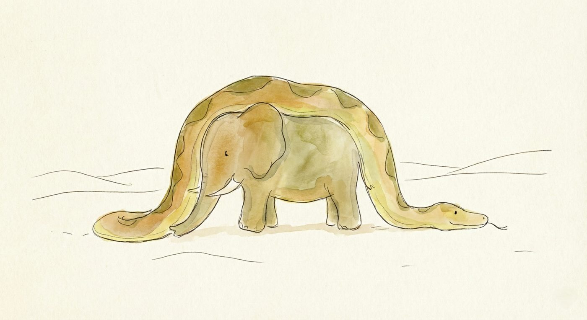
Lembra-se do desenho número 1?
Para o menino, era tudo menos ambíguo: uma jiboia feroz, imóvel e pesada, digerindo um elefante inteiro. Havia ali perigo, silêncio, tempo, uma cena viva.
Mas quando ele mostrou sua obra às chamadas “pessoas grandes” e perguntou se aquilo lhes causava medo, a resposta veio como um choque frio:
— Por que um chapéu daria medo?
Eles não viram o predador.
Não sentiram o peso do elefante.
Não perceberam o mistério do que estava acontecendo por dentro.
Viram apenas um objeto comum, inofensivo, funcional.
A tragédia desse momento não é artística, é existencial. Não se trata de talento ou interpretação, mas do instante exato em que a lógica atropela a intuição. Os adultos enxergaram um chapéu porque seus olhos já estavam domesticados pela realidade estática. Foram treinados a reconhecer contornos, não sentidos. Esqueceram que a visão não acontece apenas na retina, mas na mente, e a mente deles já havia perdido a chave do mistério.
Aqui nasce a verdadeira tragédia do crescimento: a perda da visão de raio-X.
Os adultos veem apenas a superfície. O chapéu. A forma externa.
Perderam a capacidade de enxergar o “elefante” oculto sob as coisas, aquilo que pulsa por dentro. Com o tempo, trocamos perguntas vivas por estatísticas mortas. Deixamos de perguntar “como é a voz dele?” para perguntar “quanto ele ganha?”.
Essa miopia existencial nos torna eficientes, produtivos, e profundamente cegos.
Sem imaginação, ficamos presos ao chapéu.
Com imaginação, estaríamos contemplando o mistério de um elefante sendo digerido no silêncio.
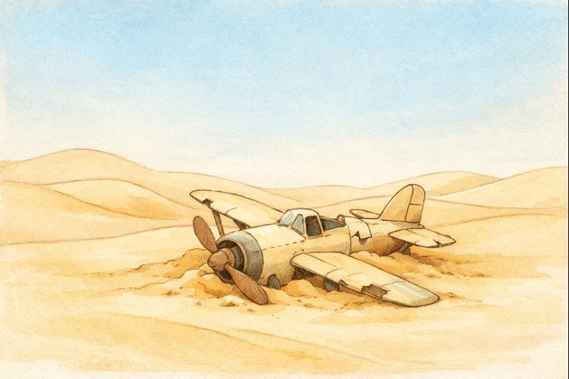
E então, somos lançados no deserto.
No livro, um avião cai no Saara, longe de qualquer lugar habitado. Mas, para você que lê, o que é esse deserto?
O deserto não é apenas areia.
Ele é o símbolo do isolamento que surge quando tudo falha. É aquele momento da vida adulta em que o motor pifa, seja um burnout silencioso, um divórcio, uma crise de sentido, um vazio que não se sabe nomear. É quando o barulho do mundo cessa à força e somos obrigados a parar.
E é justamente nesse silêncio árido que o Pequeno Príncipe aparece.
Precisamos quebrar o avião, nossas certezas, nossos sistemas, nossa lógica excessiva, para reencontrar a criança que abandonamos no caminho. Porque só no deserto, quando tudo cala, conseguimos ouvir o que é essencial.
Antes de chegar à Terra, o Pequeno Príncipe atravessa pequenos asteroides. Cada encontro não é casual: são retratos precisos das patologias da vida adulta.
O Rei, sentado sozinho em seu pequeno asteroide, governa sem súditos. Ele representa o desejo vazio de controle, a obsessão por mandar mesmo quando não há ninguém a quem servir. Mas observe bem a astúcia desse monarca: ele diz que ‘a autoridade repousa sobre a razão’ e só dá ordens que sabe que serão cumpridas. Ele ordena que o sol se ponha, mas apenas quando o relógio marca a hora do poente.
Quantas vezes não encontramos esse Rei no nosso cotidiano? Ou pior, dentro de nós? É aquele chefe que oficializa o óbvio para sentir que a decisão foi dele. É o pai ou a mãe que, percebendo que o filho já vai fazer algo, grita a ordem por cima apenas para manter a ilusão de hierarquia. O Rei nos ensina sobre a fragilidade do nosso ego: preferimos fingir que controlamos o inevitável a admitir que, na maioria das vezes, a vida acontece à revelia da nossa vontade.
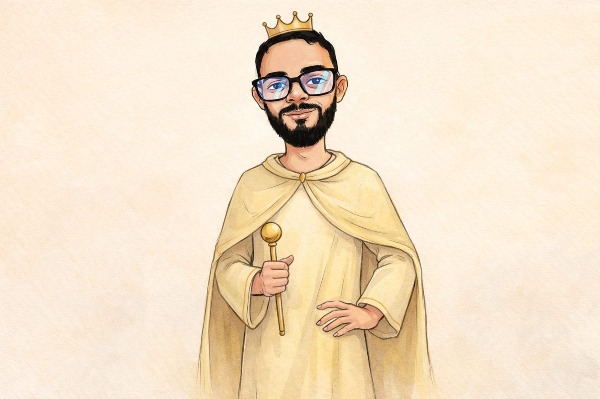
O vaidoso: A característica mais trágica do Vaidoso não é sua arrogância, é a sua surdez seletiva. Quando o Pequeno Príncipe faz uma pergunta, o Vaidoso não responde; ele não ouve. Para ele, o outro não é um interlocutor, é apenas um espelho que fala. A frase do livro é brutal: ‘Os vaidosos só ouvem os elogios’.
Trazendo para a nossa realidade, o Vaidoso representa a morte do diálogo. É aquele colega de trabalho, aquele parente ou até nós mesmos, quando estamos tão cheios de nossas próprias certezas e conquistas que a voz do outro se torna ruído. Ele nos mostra que o excesso de amor-próprio acaba nos isolando numa bolha impermeável. Quem só quer ser admirado perde a capacidade de aprender, pois aprender exige a humildade de ouvir algo que não sabemos.
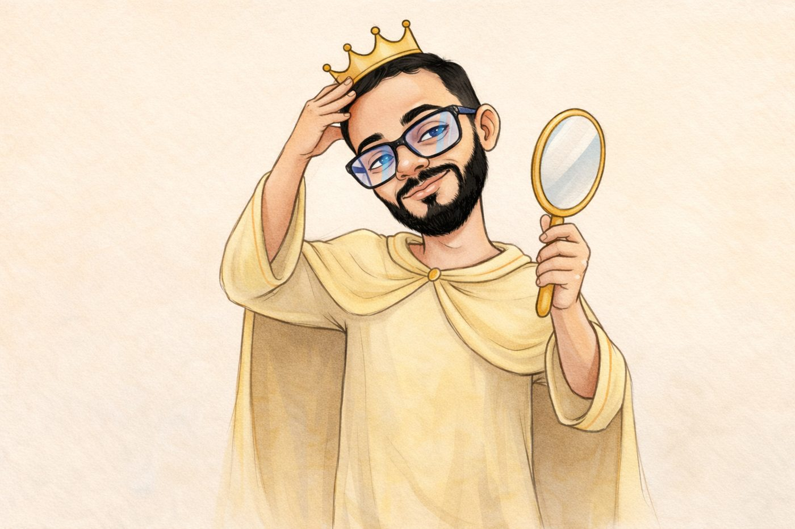
O Bêbado: A visita ao Bêbado é a mais melancólica de todas. Ele está preso em um loop lógico devastador: bebe para esquecer que tem vergonha de beber. É o retrato cruel da estagnação. Ele não quer resolver o problema; ele quer apenas apagar a consciência de que o problema existe.
No nosso cotidiano, o Bêbado é o santo padroeiro da procrastinação e da fuga digital. Quantas vezes não mergulhamos no celular para esquecer a ansiedade de uma tarefa pendente? E, quanto mais tempo passamos rolando o feed, mais culpados nos sentimos, e para aliviar essa culpa... rolamos o feed mais um pouco. Trocamos as garrafas por telas, mas a lógica é a mesma: anestesiar a mente para não ter que lidar com a dor de estar desperdiçando a vida.
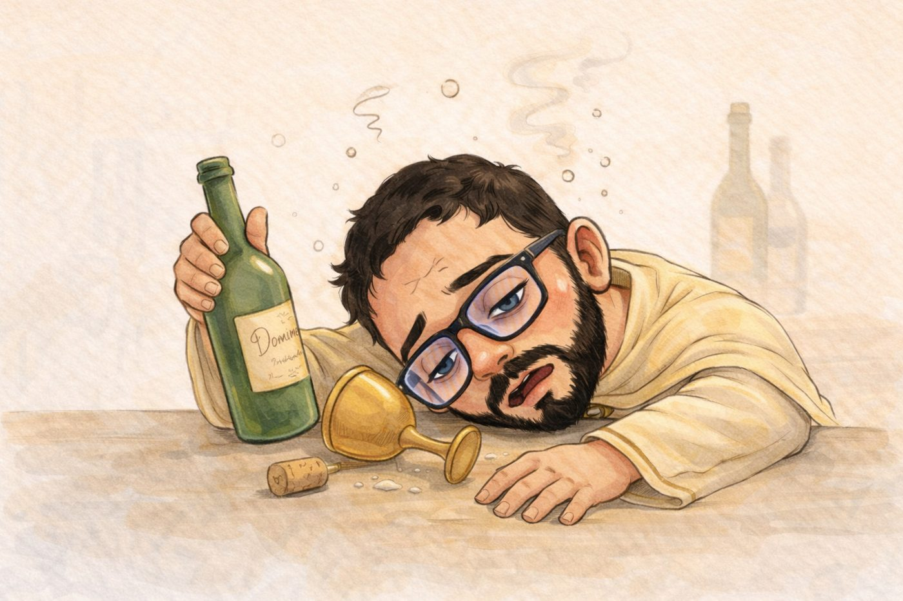
O Homem de Negócios: A lógica do Homem de Negócios é circular e vazia: ele conta as estrelas para ser rico, e quer ser rico para comprar mais estrelas. Ele anota o número num papel e tranca na gaveta. Para o Pequeno Príncipe, isso é absurdo, pois possuir algo exige cuidar daquilo (como ele cuida de sua rosa e de seus vulcões).
Quantas vezes não agimos como ele? Acumulamos bens, roupas, carros ou dígitos na conta bancária que ficam ‘trancados na gaveta’, sem uso real, sem gerar felicidade genuína. O Homem de Negócios nos ensina que a posse sem propósito é inútil. De que adianta ser dono do mundo se você não tem tempo de olhar para ele? De que adianta acumular o que não se pode levar no coração?
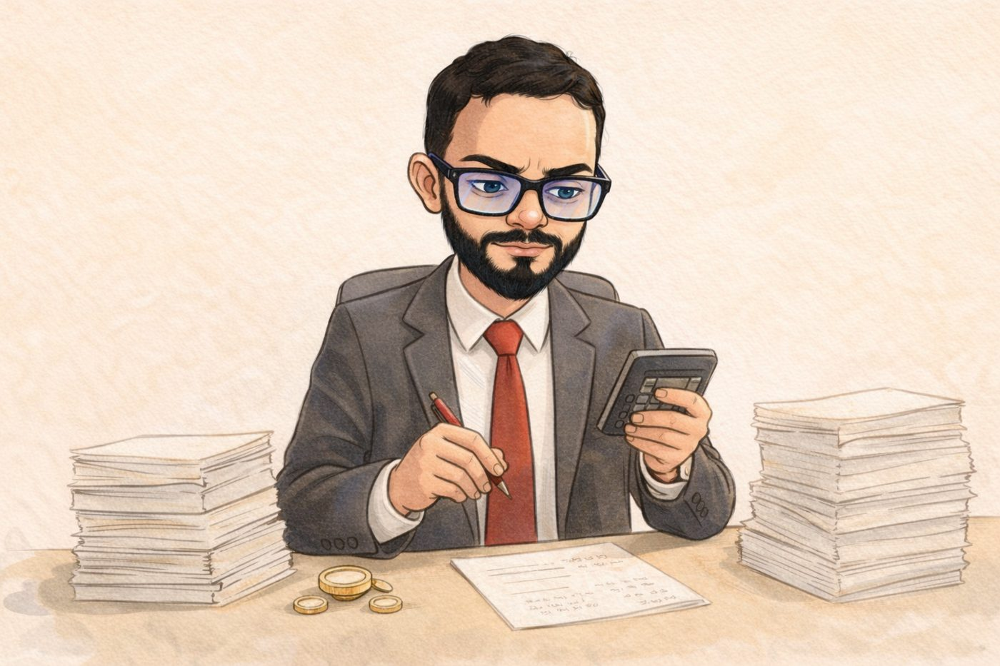
O Acendedor de Lampiões: O drama do Acendedor não é a preguiça, é a fidelidade cega. Quando perguntado por que não para de trabalhar, ele responde apenas: ‘É o regulamento’. Ele não questiona se a regra ainda é válida ou se existe uma maneira mais inteligente de cumpri-la. Ele apenas obedece, sacrificando sua vida pela manutenção de um processo.
No nosso dia a dia, o Acendedor vive naquelas tarefas que fazemos no piloto automático, repetindo o mantra perigoso do ‘sempre foi feito assim’. É a burocracia corporativa que ignora a realidade, as tradições familiares que sufocam a individualidade, ou os rituais sociais que mantemos por pura inércia. Ele nos ensina que a disciplina é uma virtude, mas a disciplina sem reflexão crítica é apenas uma escravidão disfarçada de virtude.
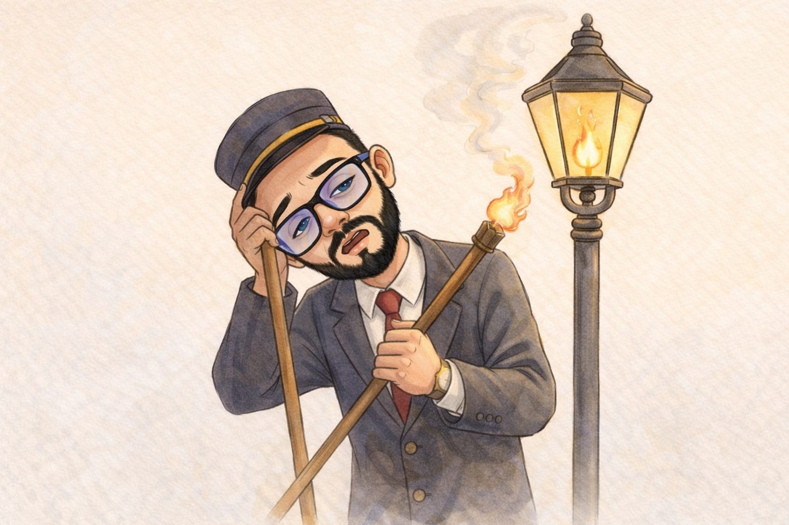
Todos são adultos. Nenhum é livre.
Aqui está o coração do livro, e o ponto onde o adulto mais dói.
O Pequeno Príncipe encontra a raposa, e ela lhe oferece o ensinamento mais subversivo de todos.
Cativar significa criar laços.
Significa permitir que algo deixe de ser comum para se tornar único.
Para o mundo, a sua rosa é apenas mais uma flor.
Para você, ela é insubstituível, porque você lhe dedicou tempo, cuidado e presença.
E então vem a frase que não é infantil, é uma sentença moral:
“Tu te tornas eternamente responsável por aquilo que cativas.”
Isso não é uma lição para crianças.
É um lembrete brutal para adultos que esquecem que vínculos geram responsabilidade emocional.
A raposa revela o segredo final:
“O essencial é invisível aos olhos.”
O desfecho é melancólico, silencioso e profundo. O Pequeno Príncipe compreende que seu corpo é pesado demais para a viagem de volta. E permite que a serpente o morda.
Não é apenas sobre morte.
É sobre sacrifício.
Sobre abandonar o supérfluo para retornar ao essencial.
Para o adulto, o ensinamento é claro e doloroso: as coisas mais valiosas não podem ser possuídas, medidas ou explicadas. E toda experiência de amor verdadeiro inclui despedida.
Publicado originalmente no Substack em 8 de janeiro de 2026.
Parte I
Sócrates (470 a.C. – 399 a.C.) não foi apenas um homem de seu tempo, mas o “divisor de águas” da alma ocidental. Sua vida em Atenas representa a transição da curiosidade sobre o mundo exterior para a investigação profunda do mundo interior.
A biografia de Sócrates carrega um simbolismo que moldou sua filosofia. Filho de Sofronisco, um escultor, e Fenareta, uma parteira, Sócrates herdou de ambos a sua metodologia:
Do pai (a escultura): Aprendeu a arte de “remover o excesso” da pedra bruta para revelar a forma oculta. Na filosofia, isso se traduzia em remover os preconceitos e as falsas certezas para encontrar a essência.
Da mãe (a maiêutica): Assim como sua mãe auxiliava no parto de corpos, Sócrates se via como um “obstetra de almas”, ajudando as pessoas a darem à luz suas próprias ideias e verdades internas.
Antes de se tornar a “mosca varejeira” de Atenas (como ele mesmo se chamava por incomodar os poderosos), demonstrou uma resiliência física e moral impecável como soldado (hoplita) em batalhas como Potideia e Delion, onde sua coragem não vinha da fúria, mas da temperança.
A história da filosofia é dividida entre o que veio antes e depois dele.
Os Pré-Socráticos (Período Cosmológico): Eram os filósofos da Physis (natureza). Buscavam a Arché, o elemento primordial (água, ar, fogo ou o infinito) que teria dado origem ao cosmos ordenado.
Sócrates (Período Antropológico): Ele promoveu uma revolução copernicana no pensamento. Ao ouvir do Oráculo de Delfos que “ninguém era mais sábio que Sócrates”, ele percebeu que sua sabedoria residia no reconhecimento da própria ignorância (“Só sei que nada sei”). A partir daí, o foco deixou de ser as estrelas e a origem do universo para se tornar o Anthropos (ser humano), a ética e a convivência política.
Diferente de seus sucessores, Sócrates nunca escreveu uma linha. Para ele, a filosofia era uma atividade viva, um exercício de dialética que exigia o “olho no olho”. Ele acreditava que a escrita “cristalizava” o pensamento e impedia o questionamento dinâmico; o texto não pode responder quando interpelado.
Conhecemos sua face por três prismas distintos:
Platão: O discípulo que o transformou em um herói da razão e porta-voz de suas próprias teorias.
Xenofonte: O historiador que o descreveu como um guia moral prático e equilibrado.
Aristófanes: O dramaturgo que, na peça As Nuvens, o ridicularizou como um charlatão que vivia “nas nuvens”, confundindo-o propositalmente com os sofistas.
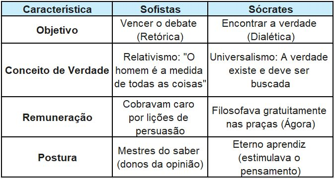
Para os sofistas, se dois indivíduos divergem sobre o sabor de uma comida, a verdade é subjetiva. Para Sócrates, a opinião (Doxa) é apenas a superfície; através do diálogo, deve-se buscar a essência do que é o “Bem” ou a “Justiça”, para além das percepções individuais.
A busca socrática não era um ensino passivo, mas um processo de dois estágios:
Ironia (Destruição): Sócrates fingia ignorância e bombardeava o interlocutor com perguntas até que este entrasse em contradição, percebendo que o que julgava saber era apenas um preconceito.
Maiêutica (Construção): Uma vez limpo das falsas certezas, o indivíduo era guiado a “dar à luz” conceitos universais sobre a Virtude (Arete), o Bem e a Justiça.
Sócrates acreditava que o erro era fruto da ignorância: ninguém faz o mal voluntariamente; faz o mal porque desconhece o que é o Bem. Portanto, educar o pensamento era o mesmo que curar a alma.
Publicado originalmente no Substack em 30 de dezembro de 2025.
Ontem, ouvi uma verdade que ecoou como um trovão: ”O silêncio é o barulho mais insuportável deste século”.
Charles Chaplin, mestre da comunicação muda, já alertava que ”o barulho aniquila a beleza do silêncio”. Mas a profecia de Chaplin evoluiu. O “barulho” do século 21 deixou de ser apenas sonoro para se tornar neuroquímico e existencial.
I. A Biologia da Fuga:
Vivemos a era da inutilidade induzida.
A distração deixou de ser um efeito colateral e se tornou um método. O sistema contemporâneo não apenas compete pela atenção, ele a captura. É uma arquitetura cuidadosamente projetada para gerar picos sucessivos de dopamina, condicionando o cérebro a confundir estímulo com sentido. O resultado é previsível: quanto mais recebemos, menos suportamos o vazio.
Biologicamente, desenvolvemos tolerância. Psicologicamente, dependência. Espiritualmente, uma aversão quase patológica à profundidade. Se dez minutos de silêncio em uma sala vazia provocam ansiedade, não se trata de falta de hábito, trata-se de perda de soberania. Nesse ponto, o indivíduo já não decide; ele reage. Já não contempla; responde a comandos. O humano cede lugar ao mecanismo.
II. A Entropia da Alma:
Mas a questão vai além do vício digital. Há uma pergunta terrível a ser feita: Será que a alma se enche de vazio?
Existe uma ironia cruel na nossa existência: o ser humano é capaz de derrubar uma floresta inteira, destruir a complexidade biológica de árvores centenárias, apenas para fabricar papel onde escreverá suas futilidades. Nós destruímos a obra concreta da criação para registrar o “nada” que habita em nós.
Isso é termodinâmica espiritual. Estamos pegando recursos de alta ordem (tempo, vida, natureza) e os convertendo em entropia (barulho, ansiedade, conteúdo inútil). É o “Anti-Gênesis”: Deus falou e criou tudo do nada; nós falamos sem parar para transformar tudo em nada.
III. O Espelho de Alta Resolução:
Por que o silêncio incomoda tanto? Porque o silêncio remove a maquiagem.
No barulho, você pode fingir ser quem não é. No barulho, a performance social te protege. Mas o silêncio é um espelho de alta resolução, impiedoso e cristalino. Ele reflete não quem você ’gostaria’ de ser, mas o abismo que você carrega. O silêncio nos obriga a encarar que, muitas vezes, somos sepulcros caiados: bonitos no Instagram, mas podres de ansiedade e incoerência por dentro.
Conclusão: O Sinal e o Ruído
A beleza do silêncio não é estética, é funcional. É no silêncio que o “sinal” (a Voz de Deus, a intuição, a estratégia) se separa do “ruído” (o medo, o ego, a opinião alheia).
Enquanto continuarmos trocando a eternidade do silêncio pela euforia barata do próximo clique, continuaremos enchendo nossa alma de vazio, destruindo o mundo real para alimentar nossas ilusões digitais. O verdadeiro poder, hoje, não pertence a quem grita mais alto, mas a quem consegue suportar o estrondo ensurdecedor de ficar em paz consigo mesmo.
Publicado originalmente no Substack em 29 de dezembro de 2025.
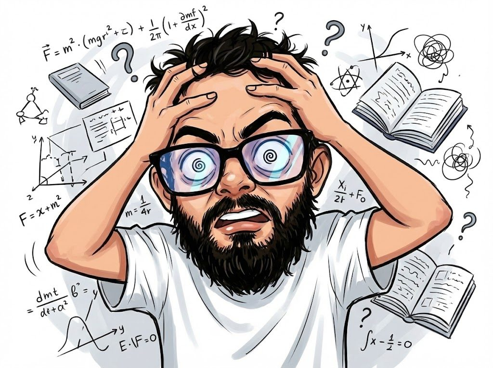
Quando abrimos as primeiras páginas de Diário de um Louco, de Nikolai Gogol, o sentimento imediato é de uma estranha resistência. Para o leitor moderno, acostumado a estímulos constantes, o cotidiano de Aksenty Ivanovich Poprishchin parece, à primeira vista, um deserto de relevância. Ele é um funcionário público de baixo escalão na Rússia czarista, um homem cuja maior preocupação é apontar lápis para o seu diretor e nutrir uma paixão platônica e patética pela filha do chefe.
Nesta primeira etapa, o livro é deliberadamente “tedioso”. Mas há uma genialidade cruel nesse tédio. Gogol nos força a habitar a mente de um homem que é invisível para a sociedade. O tédio aqui não é um erro de narrativa; é a representação da asfixia burocrática. Poprishchin tenta se convencer de sua importância, mas a realidade o esmaga.
É aqui que a armadilha é armada: nós, leitores, baixamos a guarda. Achamos que estamos lendo apenas uma crítica social sobre a hierarquia russa. Mal sabemos que o “tédio” é o silêncio que precede o grito. É o solo firme que Gogol começa a cavar por debaixo dos nossos pés, sem que percebamos que o chão já está prestes a sumir.
A transição do tédio para o magnífico acontece de forma sutil, como uma rachadura em uma vidraça que, de repente, se estilhaça por completo. A primeira fissura surge com o absurdo: Poprishchin acredita ouvir cães conversando e, mais do que isso, trocando correspondências.
O que inicialmente parece um humor satírico começa a ganhar contornos de pesadelo. É neste ponto que o livro faz algo que poucos autores conseguem: ele nos obriga a compartilhar o surto. A estrutura do diário começa a colapsar. As datas, antes lógicas, tornam-se aberrações temporais. “Janeiro do mesmo ano, que aconteceu depois de fevereiro”.
Neste momento, você, como leitor, começa a perder o contexto. A compreensão do que está sendo lido é desafiada porque a linguagem de Gogol deixa de ser descritiva e passa a ser sintomática. Não estamos mais lendo sobre a loucura; estamos lendo a partir da loucura. A lógica interna de Poprishchin se torna a única realidade possível, e é uma realidade onde ele é o Rei da Espanha. A sensação de “ficar sem chão” vem justamente desse descompasso: a nossa razão tenta segurar as rédeas da história, enquanto o texto galopa em direção ao vazio.
O clímax de Diário de um Louco é onde o tédio inicial é definitivamente enterrado por uma beleza trágica e visceral. Quando Poprishchin é levado para o hospício, acreditando estar sendo recebido pela corte espanhola, a violência da realidade choca-se frontalmente com o seu delírio.
A “Espanha” dele é um lugar de frio, pancadas e cabeças raspadas. É aqui que o livro atinge o patamar de obra-prima. A desintegração total da identidade do personagem nos despoja de qualquer superioridade que pudéssemos sentir em relação a ele. Não rimos mais do louco; sofremos com o homem.
A frase final, aquele apelo desesperado pela mãe e pela casa na aldeia, é o momento em que o chão desaparece por completo. Percebemos que a loucura de Poprishchin não foi uma escolha, mas uma fuga de uma realidade insuportável. Gogol nos mostra que, por baixo das camadas de status, cargos e sanidade, existe uma fragilidade humana que todos compartilhamos. Terminamos a leitura exaustos, sem chão, mas com uma compreensão muito mais profunda, e terrível, do que significa ser humano em um mundo que, muitas vezes, parece não fazer sentido nenhum.
Publicado originalmente no Substack em 26 de dezembro de 2025.
Você já pediu desculpas para um objeto depois de esbarrar nele? Ou jurou que seu cachorro estava te julgando com o olhar? 🐶
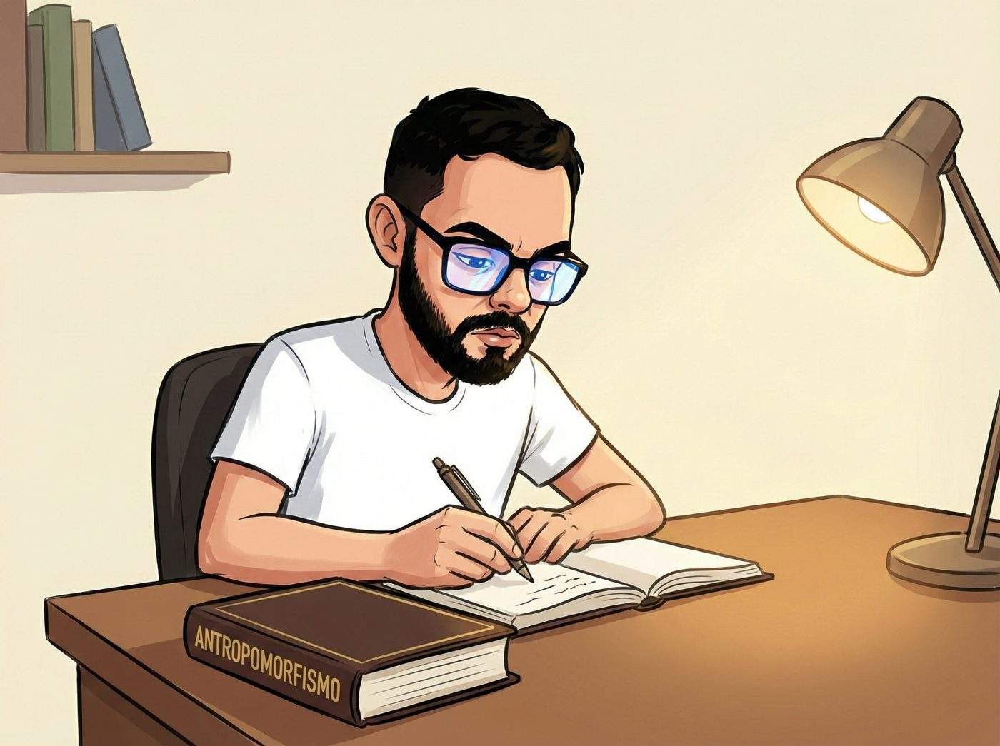
Sabe quando você bate o dedinho do pé na quina da mesa e, além de gritar, xinga a mesa de “estúpida”? Ou quando jura que seu cachorro está fazendo “cara de culpa” porque comeu seu chinelo?
Isso é Antropomorfismo.
É uma característica filosófica e psicológica fascinante onde projetamos nossa “humanidade” — qualidades, emoções, intenções — em tudo aquilo que não é humano. Basicamente, é a nossa teimosia em tentar enxergar o universo através do único espelho que conhecemos: nós mesmos.
No ambiente acadêmico, definimos isso de forma mais elegante:
“A atribuição de qualidades mentais humanas a seres não humanos; um fenômeno típico das relações que as pessoas desenvolvem com animais, objetos e divindades.”
Mas não se engane: o processo vai muito além de desenhar um rosto numa bola de vôlei e chamá-la de Wilson. O antropomorfismo não é apenas sobre a forma física (morfologia), mas sobre a psique. Atribuímos a seres inanimados ou irracionais a capacidade de amar, odiar, planejar vingança ou ter crises existenciais.
O estudo do antropomorfismo é essencial porque explica como interagimos com o mundo. Veja só:
Teologia e Mitologia (O Drama Divino): Historicamente, nós criamos deuses à nossa imagem. Na mitologia greco-romana, por exemplo, os deuses não eram apenas forças abstratas; eles sentiam ciúmes, raiva, luxúria e inveja. Zeus, no fundo, era um CEO corporativo muito poderoso e com péssimo controle de impulsos.
Psicologia e Comportamento Animal (O “Sorriso” do Cão): Aqui mora o perigo e a fofura. Atribuir sentimentos humanos aos pets aproxima o tutor do animal (o que é ótimo), mas pode gerar erros de interpretação. Às vezes, o que achamos ser um “sorriso” é apenas tensão facial, e o que chamamos de “beijo” é apenas uma prova de sabor.
Semiótica e Tecnologia (A Revolta das Máquinas): Hoje, aplicamos isso às IAs (olá!) e robôs. Quando o computador trava, dizemos que ele “não quer trabalhar”. É um processo de significação onde tentamos humanizar a frieza dos circuitos para não nos sentirmos tão sozinhos no cosmos digital.
Vamos dissecar a palavra, porque etimologia é a arqueologia das ideias:
Anthropos (ἄνθρωπος): Do grego antigo, significa “Homem” ou “Ser Humano”.
Morphé (μορφή): Significa “Forma”.
Juntando tudo, temos literalmente a “tendência de atribuir forma humana”. O termo afrancesado anthropomorphisme foi documentado a partir de 1749, mas a prática é tão antiga quanto a primeira vez que um humano olhou para a Lua e viu um rosto nela.
No fim das contas, o antropomorfismo talvez revele menos sobre os objetos e animais, e muito mais sobre a nossa profunda solidão existencial. Procuramos humanidade nas pedras, nas nuvens e nas máquinas porque, no fundo, buscamos conexão em tudo o que tocamos.
Publicado originalmente no Substack em 17 de dezembro de 2025.
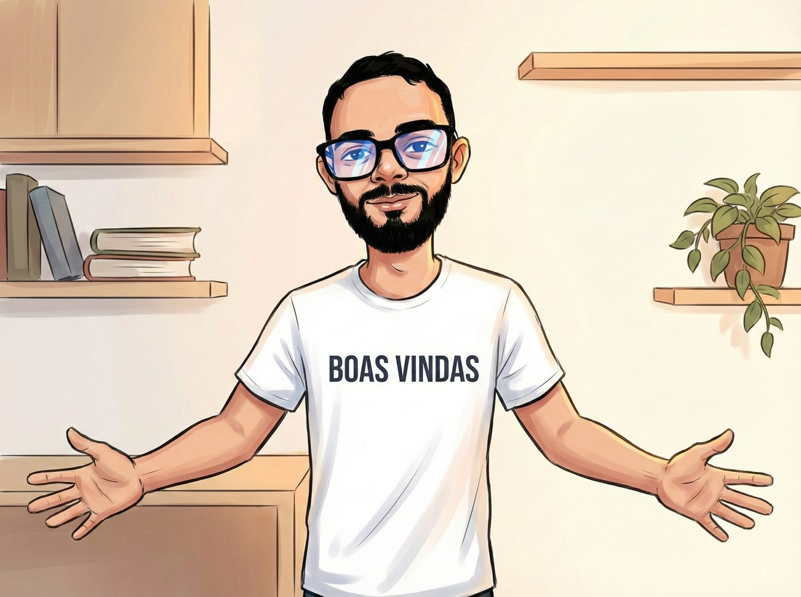
Sou Marcos Vinicius, mas também conhecido como Cacau, físico em formação, programador, pesquisador e leitor que não sabe existir sem perguntas. Minha vida intelectual nasceu no encontro improvável entre três mundos que raramente convivem em paz: a física, a ficção e a teologia. Em cada um deles encontrei uma forma diferente de olhar para o real, mas nunca consegui separar completamente suas linguagens. É aqui, neste espaço, que tento costurar essas três vozes em uma só.
Estudo materiais magnetocalóricos e modelos de regressão, mas considero que nenhum algoritmo descreve tão bem o ser humano quanto uma boa história. Codifico sistemas, mas descubro que boa parte do universo parece ter sido escrito em um dialeto antigo de equações. Creio na estrutura matemática da realidade, mas também na intuição silenciosa que sopra significados quando a lógica esgota seus mapas. Vivo entre essas margens, a exatidão que a física exige, a abertura que a ficção permite e o mistério que a teologia desperta.
Neste Substack escrevo para quem sente que o mundo visível nunca é o mundo inteiro. Para quem intui que existe algo no interstício entre o cálculo e o espírito, entre a imaginação e o experimento. Para quem percebe que a ciência descreve como somos, mas a teologia pergunta por que somos, enquanto a literatura tenta lembrar quem poderíamos ser. Aqui não há respostas prontas, mas há uma busca honesta, por sentido, estrutura, beleza e precisão.
Minha curiosidade é sistemática, quase teimosa. Sempre penso que, se um fenômeno existe, ele merece ser compreendido; e se não existe, merece ser imaginado. A fronteira entre conhecimento e criação é, para mim, menos um limite e mais um laboratório. Acredito que o ser humano é uma espécie de antena para o infinito: capta fragmentos de verdade, traduz em símbolos, e chama isso de ciência, fé ou arte. No fundo, todas essas coisas são tentativas diferentes de decifrar o mesmo silêncio primordial.
Entre uma linha de código e outra, leio filosofia; entre uma prova de física e outra, escrevo sobre teologia; entre uma madrugada insone e outra, imagino realidades que talvez só existam no intervalo entre um pensamento e o próximo. Este espaço é o depósito dessas interseções, notas de laboratório misturadas com diário espiritual, ficção especulativa com fundamentos matemáticos, reflexões pessoais com rigor científico.
Se você se interessa por um tipo de pensamento que reconhece tanto a grandeza do universo quanto a vulnerabilidade humana; se prefere perguntas que abrem portas a respostas que fecham capítulos; se gosta de ver ciência, fé e imaginação conversando sem pedir licença aos puristas, então este Substack é também seu.
Bem-vindo ao lugar onde a física encontra o mito, onde a teologia encontra o cálculo, e onde a ficção encontra a possibilidade de se tornar real.
Publicado originalmente no Substack em 15 de dezembro de 2025.
Examino a realidade onde a física encontra símbolos, a teologia encontra estruturas e a ficção expõe possibilidades. Busco uma linguagem que una cálculo, imaginação e transcendência para compreender o invisível no real.
Sou Marcos Vinicius, mas também conhecido como Cacau, físico em formação, programador, pesquisador e leitor que não sabe existir sem perguntas. Minha vida intelectual nasceu no encontro improvável entre três mundos que raramente convivem em paz: a física, a ficção e a teologia. Em cada um deles encontrei uma forma diferente de olhar para o real, mas nunca consegui separar completamente suas linguagens. É aqui, neste espaço, que tento costurar essas três vozes em uma só.
Estudo materiais magnetocalóricos e modelos de regressão, mas considero que nenhum algoritmo descreve tão bem o ser humano quanto uma boa história. Codifico sistemas, mas descubro que boa parte do universo parece ter sido escrito em um dialeto antigo de equações. Creio na estrutura matemática da realidade, mas também na intuição silenciosa que sopra significados quando a lógica esgota seus mapas. Vivo entre essas margens, a exatidão que a física exige, a abertura que a ficção permite e o mistério que a teologia desperta.
Neste Substack escrevo para quem sente que o mundo visível nunca é o mundo inteiro. Para quem intui que existe algo no interstício entre o cálculo e o espírito, entre a imaginação e o experimento. Para quem percebe que a ciência descreve como somos, mas a teologia pergunta por que somos, enquanto a literatura tenta lembrar quem poderíamos ser. Aqui não há respostas prontas, mas há uma busca honesta, por sentido, estrutura, beleza e precisão.
Minha curiosidade é sistemática, quase teimosa. Sempre penso que, se um fenômeno existe, ele merece ser compreendido; e se não existe, merece ser imaginado. A fronteira entre conhecimento e criação é, para mim, menos um limite e mais um laboratório. Acredito que o ser humano é uma espécie de antena para o infinito: capta fragmentos de verdade, traduz em símbolos, e chama isso de ciência, fé ou arte. No fundo, todas essas coisas são tentativas diferentes de decifrar o mesmo silêncio primordial.
Entre uma linha de código e outra, leio filosofia; entre uma prova de física e outra, escrevo sobre teologia; entre uma madrugada insone e outra, imagino realidades que talvez só existam no intervalo entre um pensamento e o próximo. Este espaço é o depósito dessas interseções, notas de laboratório misturadas com diário espiritual, ficção especulativa com fundamentos matemáticos, reflexões pessoais com rigor científico.
Se você se interessa por um tipo de pensamento que reconhece tanto a grandeza do universo quanto a vulnerabilidade humana; se prefere perguntas que abrem portas a respostas que fecham capítulos; se gosta de ver ciência, fé e imaginação conversando sem pedir licença aos puristas, então este Substack é também seu.
Bem-vindo ao lugar onde a física encontra o mito, onde a teologia encontra o cálculo, e onde a ficção encontra a possibilidade de se tornar real.
Texto de apresentação publicado em 15 de dezembro de 2025. Todos os textos: marcoscacau.substack.com.